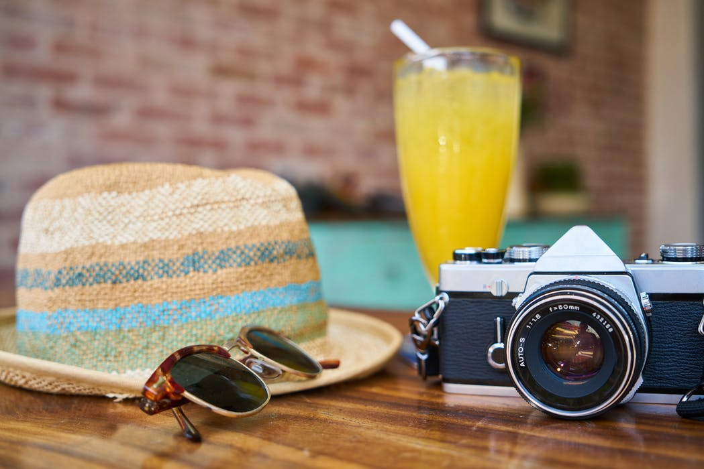
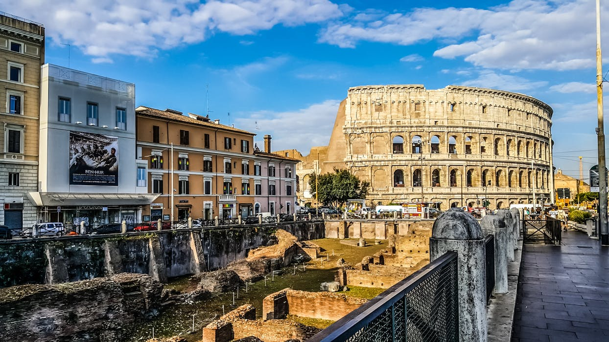
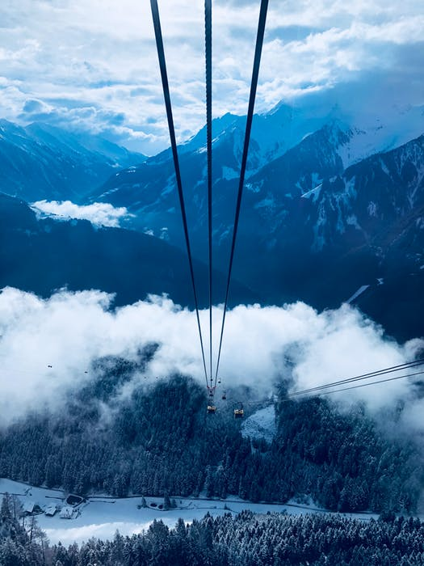
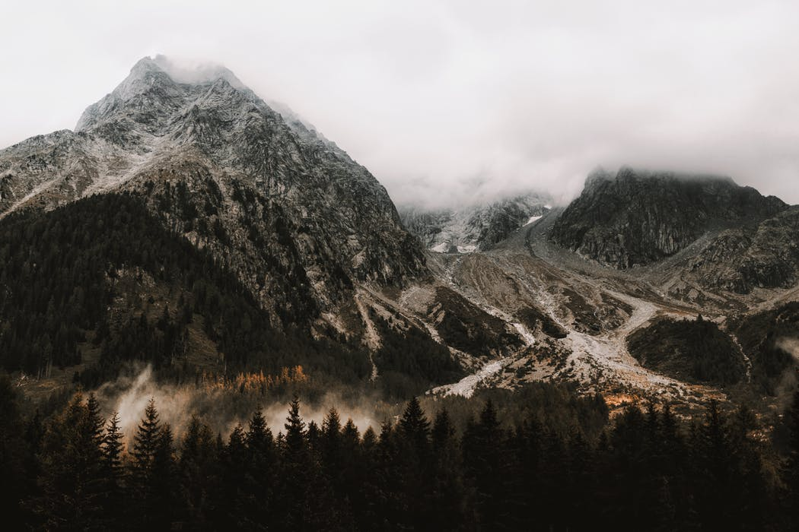
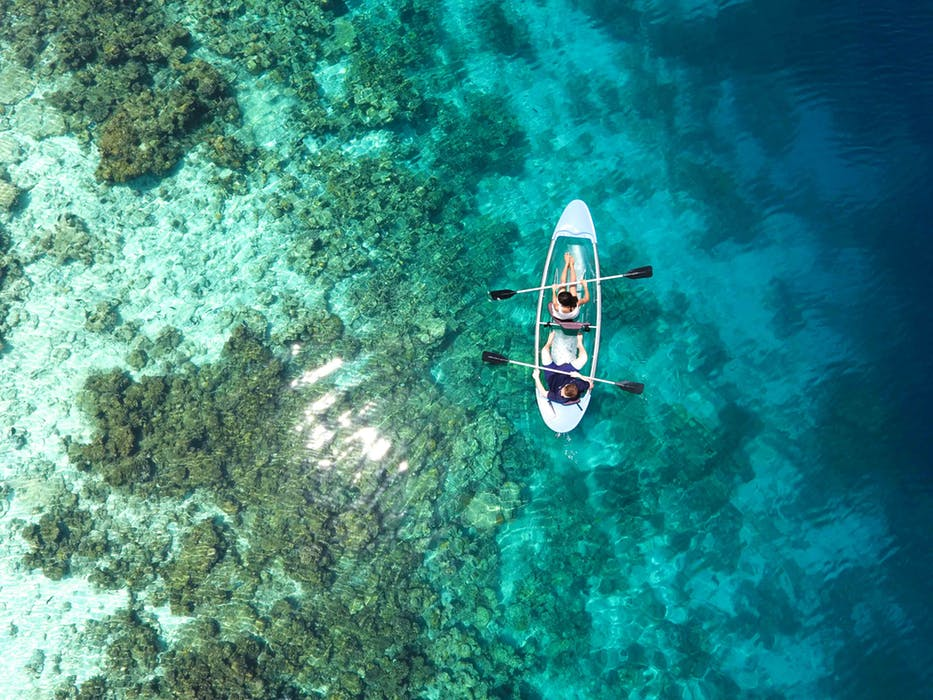

Det er alltid veldig deilig å reise på ferie.
På ferie har man mulighet til å ta en pause fra det stressende hverdagslivet
på skole og jobb. Ofte så liker jeg å bare lene meg tilbake å høre på musikk
uten å måtte gjøre noen ting. Det er mange ting jeg liker med ferie,
og dette er noen av dem.
Hva jeg liker med ferie

Du kan slappe av
Ha fri fra skole og jobb
Ikke tenke så mye
Ikke stressende
Hvor?
I løpet av en ferie liker jeg å reise til forskjellige steder.
Jeg kan reise overalt, men hvor jeg foretrekker å reise avhenger av årstiden.
Blant annet så liker jeg å reise til steder hvor jeg kan stå på ski
hvis det er vinter eller høstferie.
Hvor liker jeg å ha ferie om våren/sommeren?
Spania
Italia

Hvor liker jeg å ha ferie om høsten/vinteren?
Solden

Hytta i Valdress

Hintertux
Maldivene

Om vinteren liker jeg å reise til anddre steder hvor jeg kan stå på ski,
men det er også litt deilig og reise til varme steder og derfor
liker jeg også Maldivene.